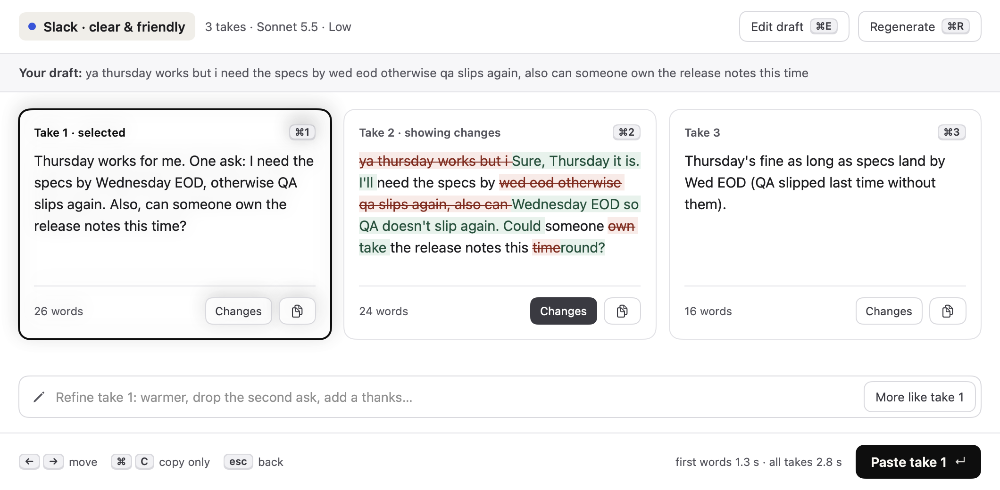
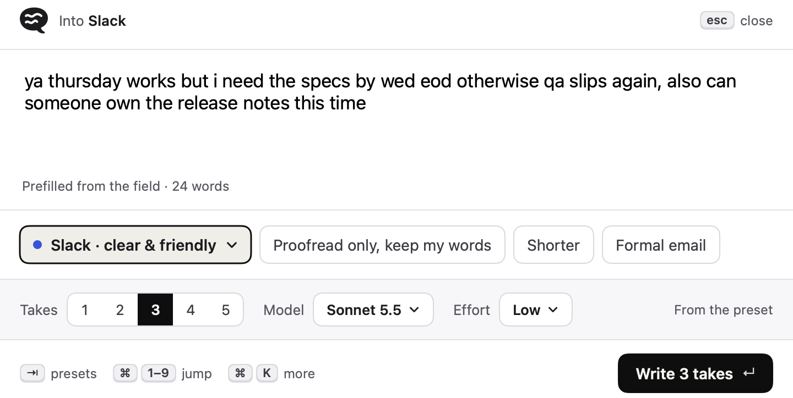
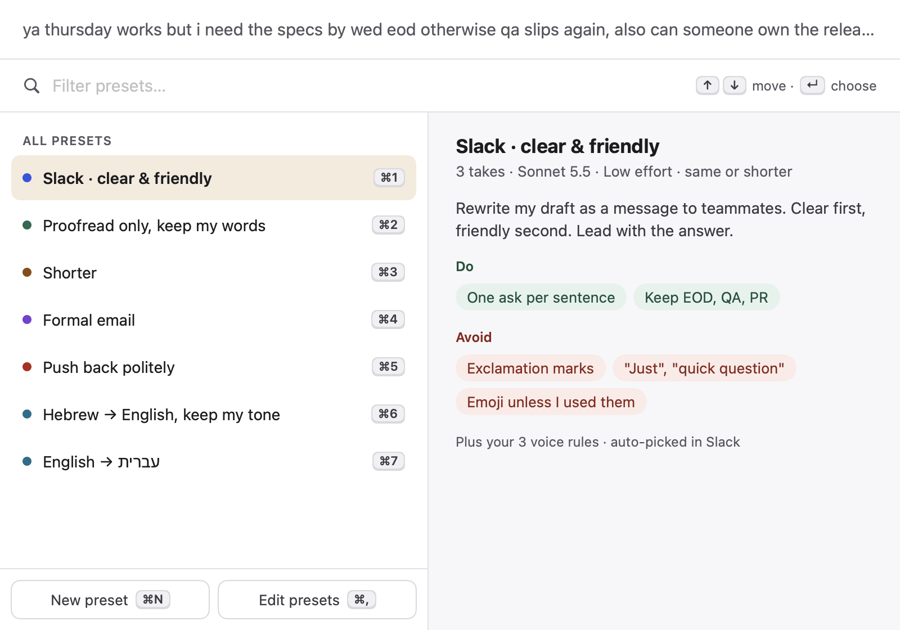

Your thought.
A few takes.
A small Mac app for finding the wording that fits. Write a draft, compare a few versions, and paste the one you choose back where you started.
Draft
Start with what you mean. Press Control + Option + Space in any text field.
Choose
Find the version that fits. Compare the takes, see what changed, refine one.
Paste
Return it to your text field. You decide when to send.
A little warmer. Still useful.
Plain language. A practical request. A small amount of personality. Pick a preset, and Takes writes the same message a few ways.
Shorter
Please review the deck by 3.
Warmer
Could you give the deck a quick look by 3? Fresh eyes to the rescue!
More formal
Could you please review the deck by 3? Thank you.
Choice is the product.

Compare complete alternatives, inspect changes, refine a selected take, then paste it back.
Your voice has controls.
Presets guide the rewrite. Rules and examples make the instruction personal.

A shortcut in the app you're using
The draft starts with your selection or the text in the field. Each app can have its own preset, picked automatically.

Configured, personal style
Set Do and Avoid rules, voice rules for every preset, and up to five examples of how you write.
Your Mac. Your Claude. Your choice.
Presets and optional history live on your Mac.
Drafts, instructions and voice examples go to Anthropic through your Claude connection.
Takes pastes the version you choose into the original field. You decide when to send.
Only the focused field or selection is read, and only when you press the shortcut. Takes has no developer-run server and no analytics. Read the privacy notice.
Good to know.
What do I need?
macOS 14 or later, Accessibility access so Takes can read the field and paste, and a working Claude connection: Claude Code signed in to your account, or an Anthropic API key.
Does it work in my app?
In apps whose text fields macOS can read, including Slack, Mail, Messages, Notes, browsers and Claude's desktop app. Where an app hides its field, Takes copies the text instead and puts your clipboard back.
What does it cost?
Takes is free and open source under the MIT license. Generation uses your own Claude plan or API account.
Is it made by Anthropic?
No. Takes is an independent app that runs Claude Code or calls the Claude API with your own account.